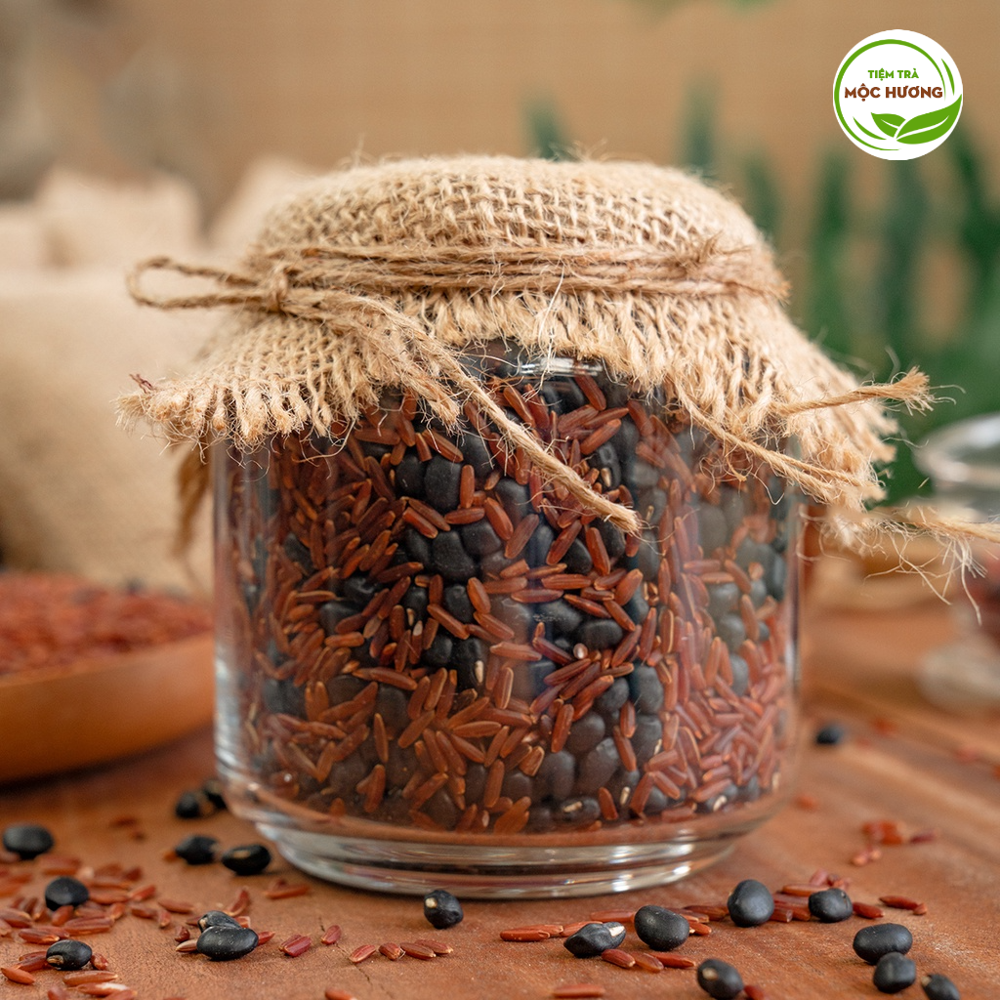
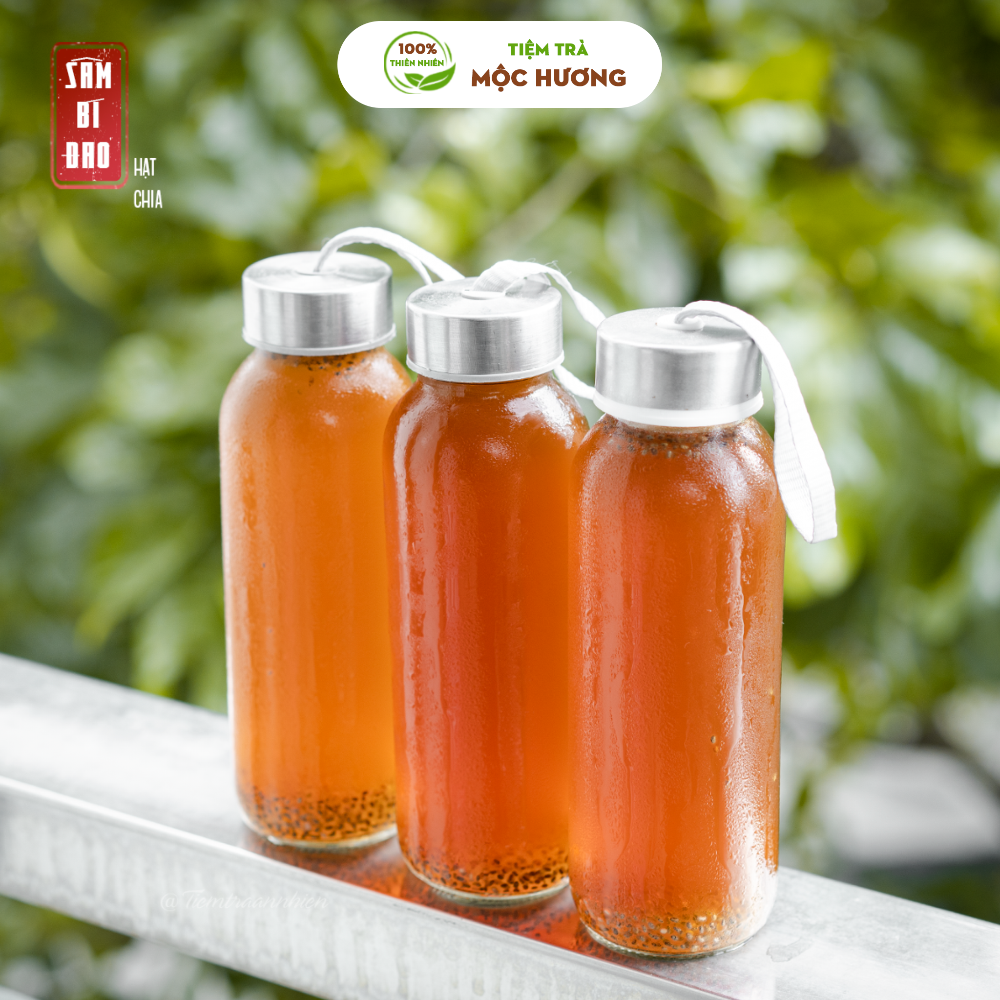
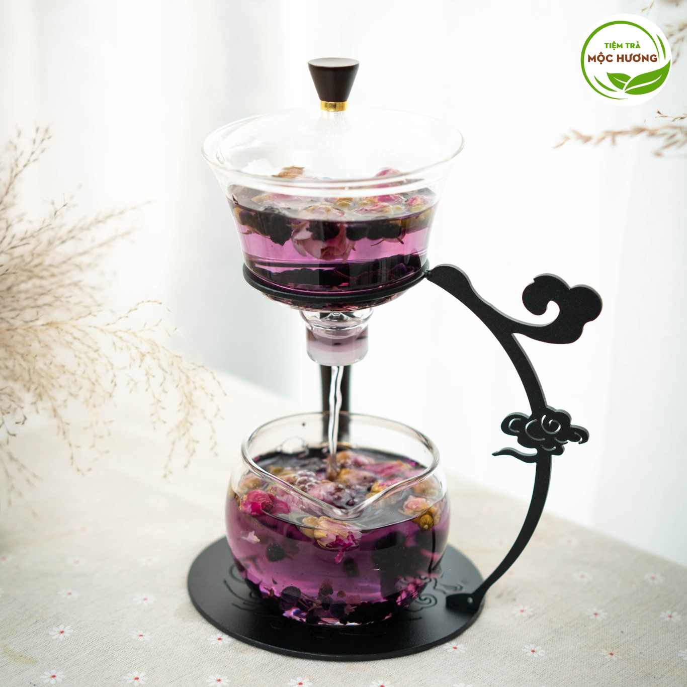

LỢI ÍCH CỦA TRÀ THẢO MỘC
CHO SỨC KHỎE
Khác với các trà thông thường như trà xanh, trà ô long, trà đen,... đều có nguồn gốc từ cây chè thì trà thảo mộc là một loại trà hoàn toàn khác. Vậy cụ thể trà thảo mộc là trà như thế nào? Lợi ích của trà thảo mộc đối với sức khỏe như thế nào? Tất cả sẽ được giải đáp ngay sau đây.

5 LOẠI TRÀ THẢO MỘC TỐT CHO PHÁI ĐẸP
Sản phẩm từ tự nhiên thường xuyên được nhắc đến và ưu tiên sử dụng

TRÀ THẢO MỘC CHỐNG LÃO HÓA
Trà thảo mộc có thể mang lại nhiều ích lợi cho sức khỏe, trong đó một số [...]

NÊN UỐNG TRÀ KHI NÀO THÌ TỐT?
Trà thảo mộc còn có nhiều các tác dụng tốt cho sức khỏe nếu như bạn [...]

LỢI ÍCH CỦA TRÀ BÍ ĐAO CHO SỨC KHỎE
Trà bí đao nổi tiếng với công dụng giúp thanh nhiệt, giải độc, tốt cho sức khỏe.

NHỮNG LOẠI TRÀ CHO
BÀ BẦU NÊN DÙNG
BÀ BẦU NÊN DÙNG
Nắm được loại trà nên hoặc không nên uống để tránh gây ảnh hưởng đến thai nhi [...]